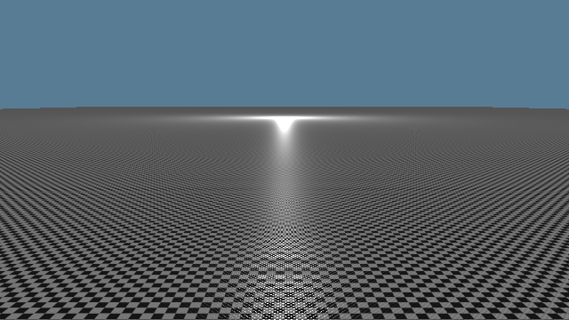
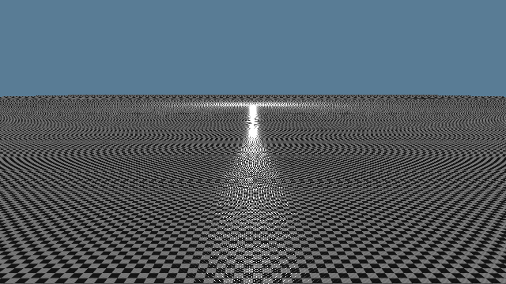
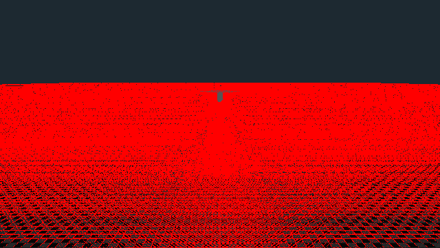
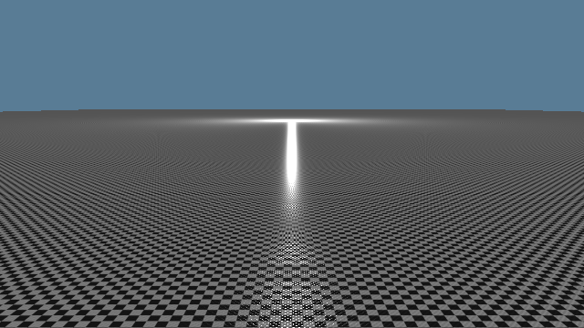
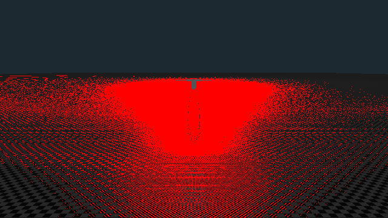
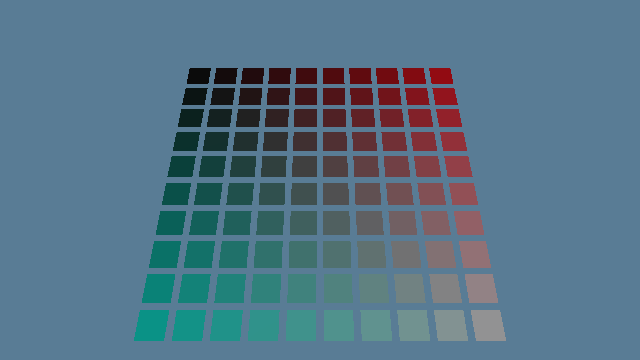
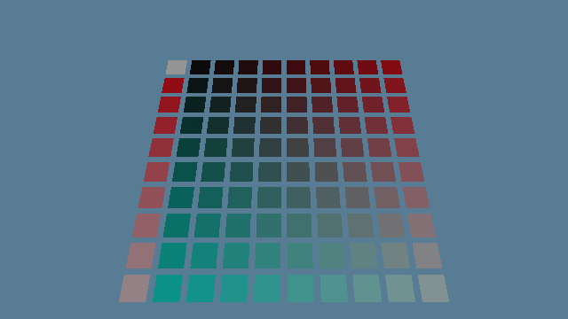

A field guide to mips, anisotropic filtering, normal maps and Toksvig, told through the two Reference scenes that test them: a glossy floor that stretches to the horizon, and a wall of 10,000 tiny textures.
A texture is an image wrapped onto a surface. Its own pixels are called texels, to keep them apart from the screen's pixels. The minification floor uses a 256 × 256 checkerboard, repeated every metre across a floor 100 metres long.
For every screen pixel, the GPU asks one question: which colour of the texture belongs here? When the surface is close, one texel covers several pixels and the answer is easy. When the surface is far away, the opposite happens: one pixel covers many texels. This is minification, and the scene is named after it.
Averaging 64 texels for every pixel of every frame would be far too slow. Instead, the cooker does the averaging once, ahead of time. Next to the full image it stores a half-size copy where each texel is the average of a 2 × 2 block, then a quarter-size copy, and so on down to a single texel. These copies are mips (from multum in parvo, "much in little"). Together they form the mip chain.
At draw time the GPU measures how many texels the pixel spans and reads the mip whose texels are about one pixel big. It blends the two nearest mips so there is no visible seam between them. That blending is the trilinear filtering the engine uses.
Image files store brightness through the sRGB curve, which spends more numbers on dark shades because our eyes are sensitive there. Average the stored numbers of black (0) and white (255) and you get 128, which displays noticeably too dark. Average the actual light and you get half the light, which sRGB stores as 188. The cooker builds mips in linear light for this reason, and a cook test checks for 188.
This is a small software render of a checker floor stretching away from a camera 1.2 m above it. With one sample per pixel the distance dissolves into moiré, interference rings that were never in the texture. With mips each pixel shows the average of what it covers, and the distance settles into grey.
A pixel is square on the screen, but its footprint on a floor seen at a grazing angle is not. It stays narrow across the floor and stretches far into the distance. Plain mips can only pick one square texel size. If it matches the long side, the texture blurs across. If it matches the short side, it aliases along.
Anisotropic filtering handles the stretch. It reads the mip that matches the short side, then takes several samples along the long side and averages them. The engine allows up to 16x, sixteen samples along one footprint. Sharp detail survives across the floor, and the distance still averages along it. (Since #257, merged on 2026-10-22 as f4c7442, 16x is the limit for colour textures; data textures, such as normal and roughness maps, allow 4x. Anisotropy Explained tells why.)
A surface's normal is the direction it faces. Lighting depends on it. A normal facing the light is bright; one facing away is dark. For a shiny surface, the highlight appears where the normal sits halfway between the direction to the light and the direction to your eye.
A normal map is a texture that stores a tilted normal per texel instead of a colour. The geometry stays perfectly flat, but lighting reads the stored tilts, so the surface looks bumpy. The minification floor's normal map holds a grid of round bumps, one every 8 texels, about 3 cm apart, with slopes up to 27°.
Every point of a surface also has a roughness. A smooth surface (low roughness) is a near mirror and shows a light as a small, intense highlight. A rough surface scatters the light into a broad, dim glow. The total reflected light is about the same; rough surfaces spread it out. The floor's roughness is 0.2, fairly glossy, like polished stone.
Mips solve colour textures, but they quietly break normal maps. Up close, each pixel covers part of one bump and sees one tilted normal: you get glints where bumps face the light. Far away, one pixel covers many bumps tilted every way. Physically, those many little mirrors scatter the light in all those directions. The pixel should show a broad, dim glow, just like a rough surface would.
Now look at what a mip does to that pixel. It averages the arrows. Arrows tilted left and right cancel out, and the average points straight up: flat. Flat and glossy is a near mirror. The distance renders as a razor-sharp, far too bright line, and it flickers as the camera moves, because tiny changes decide whether the mirror catches the light.
Michael Toksvig (NVIDIA, 2004) noticed a measurable clue. Average unit-length arrows that disagree and the result is shorter than 1. The more they disagree, the shorter it gets. That length tells you how bumpy the area under the pixel was, even after the bumps themselves have averaged away.
The cooker uses that clue. For every mip of the floor's roughness texture, it measures the arrows' disagreement in the matching mip of the normal map and raises the roughness by it. The floor's distance becomes rougher, and the light spreads about as widely as the real bumps would spread it. The roughness texture is "paired" with its normal map for this reason, and the pull request that added the minification scene (#174) extended that pairing to procedural scenes like this one.
The roughness widening has a short formula. If the averaged arrow has length |m|, the arrows' spread is σ² = (1 − |m|) / |m|. The highlight's width parameter (GGX α, which is roughness squared) grows as α′² = α² + 2σ². The second step comes from Kaplanyan and colleagues (HPG 2016). For the floor's bumps that turns roughness 0.2 into about 0.6 in the distance. That is the difference between a laser line and the soft glow in the Golden.
Many engines hide this flicker by blending several frames together (temporal anti-aliasing). Praxis avoids temporal tricks by design (ADR 0008), so every frame has to be right on its own, and Toksvig is the floor's main tool for that. (It is not the whole answer. Later work on #184 found that at 1440p the anisotropic filtering of chapter 3 read the normal and roughness maps from a finer mip, whose widening covers the footprint's width but not its length, so the highlight sparkled. Since #257 those maps are read at 4x, which removed the sparkle; Anisotropy Explained tells that story.)
Everything above is packed into one Reference scene. A 100 m glossy checker floor, seen from 1.2 m up at a grazing angle. A bump normal map, and one point light hovering 1 m over the floor 30 m ahead. The floor mirrors that light about 16 m out, deep in the minified zone, so the reflection's shape depends on Toksvig.
Its image is a Golden: a reviewed render committed to the repository. Every test run renders the scene again and compares it pixel by pixel, allowing one step out of 255 for rounding. Each run compares two renders with the Golden: one at the origin, and one shifted 100 km along both horizontal axes. Both must match, which proves no large world coordinate reaches the GPU in low precision.

Golden, Metal (M4 Pro), 640 × 360, as recorded at M2A test that never fails proves nothing, so each safeguard was switched off on purpose to check that the Golden catches it. Each broken render was compared against the Golden. The difference image dims the broken render to a third and paints every pixel that differs by more than one step in red.

Cooked without mips
Difference: 119,995 pixels off (Metal), 99,497 (software Vulkan)
Cooked without Toksvig
Difference: 56,945 pixels off (Metal), 61,231 (software Vulkan)A shader can only read textures it has been handed before drawing. Praxis hands over each kind of texture as one big numbered list, a binding array: one list for colour, one for normals, one for roughness, and so on. Each list is a Channel, and a position in it is a Layer. A material stores Layer numbers, so a draw needs no texture swapping at all. Slot 0 always holds a neutral default, so a material without, say, a normal map still has something harmless to read. An open world streams thousands of textures through these lists, so the scene asks: do they still work at 10,000?
Each of the 10,000 textures is 4 × 4 texels of one flat colour, and the colour spells out its own number. Red is its last digit, green its tens digit, each in steps of 28, and blue its hundreds. If any quad read the wrong slot, it would show the wrong colour, and the Golden would catch it.

Golden, Metal, as recorded at M2
Bug planted: every texture registered one slot too lowEach frame has a budget of 6 ms of CPU time on the M4 Pro (ADR 0013). The architecture decision ADR 0017 set a gate before streaming could build on binding arrays. Rebuilding the 10,000-entry list, plus drawing one frame with it bound, must fit in those 6 ms at the median and at p95 (the slowest frame in twenty).
Two costs showed up. Rebuilding the list happens when textures arrive or leave, and costs about 2.5 to 3 ms. Keeping it bound costs something every single frame. On Macs, wgpu, the graphics library Praxis uses, asks Metal to keep each texture in the list resident, one call per texture, each time the list is bound, so every frame. Those calls alone are almost half of a 2.1 ms bill (45% in #153's profile, with wgpu's own tracking of each texture another 17%), against 0.04 ms when only the 100 drawn textures and each Channel's default are bound. Metal can also make many textures resident at once, through heaps or residency sets, which is what the first option below is about.
The open decision is what to do about the steady per-frame cost before the streaming milestone (M4). The options are cheaper residency on Metal, binding only the textures visible each frame, grouping textures into a few large arrays, or capping how many stay bound. The recommendation on #173 is to research those before committing.